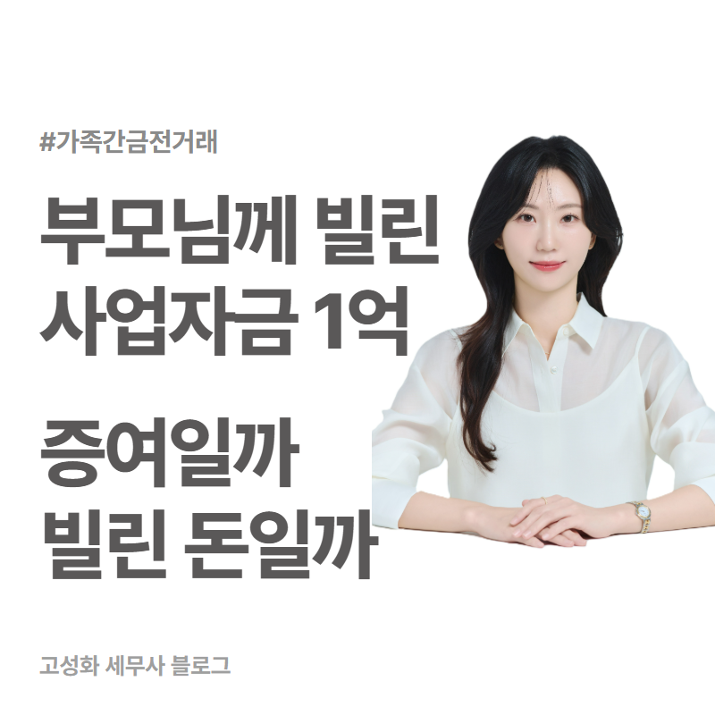
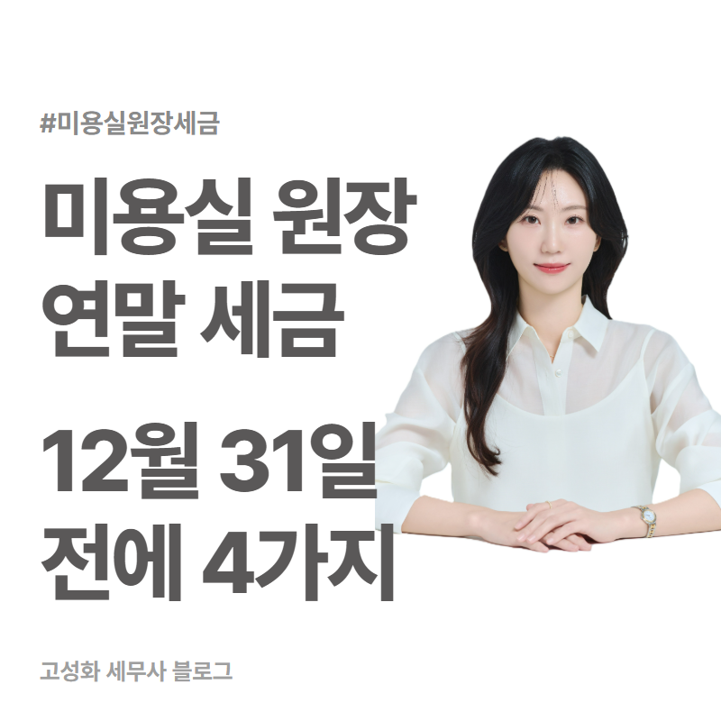

서초 방배 · Tax consulting partner
세금 문제,
혼자 고민하지 마세요.
성화세무회계 세무사 고성화입니다.
프리랜서의 첫 신고부터 법인 기장, 부동산 세금까지 쉽게 설명하고 끝까지 챙깁니다.
간편 계산기
양도소득세, 대략 얼마나 나올까요?
현행 세법 기준으로 직접 계산해 보세요. 계산만 하실 때는 입력한 금액이 어디에도 저장·전송되지 않습니다.
세무칼럼
최근 올린 글

부모님께 빌린 사업자금 1억, 증여인가요 빌린 돈인가요
부모님께 받은 사업자금 1억원이 증여인지, 빌린 돈인지, 투자인지, 급여인지는 통장에 찍힌 입금 내역만으로 정해지지 않습니다. 돈을 주고받은 날 무엇으로 정했는지, 그리고 그 뒤의 돈의 움직임이 그…

미용실 원장 연말 세금 체크리스트, 12월 31일 전에 4가지
예약표는 12월 말까지 꽉 차 있는데, 장부는 내년 5월에 보면 된다고 미뤄두셨을 겁니다. 그런데 미용실 원장님의 세금 중에는 12월 31일이 지나면 올해 숫자로 굳어져서 손댈 수 없는 것들이 있습…

법인 사업자등록, 법인설립신고 따로 내야 하나요
"법인 사업자등록은 어떻게 하는 건가요?" 법인을 처음 세우시는 대표님께 최근 받은 질문입니다. 개인사업자로 등록해보신 분은 세무서에 신청서 한 장 내면 끝났던 기억이 있으실 겁니다. 법인은 순서가…

협찬 제품 경비처리, 수입에 넣었다면 경비도 되나요
협찬 제품을 수입에 넣으셨다면, 그 제품을 사업에 쓴 만큼은 필요경비로 따져볼 수 있습니다. 수입으로 잡은 금액이 곧 그 제품의 값이 되기 때문입니다. 다만 받은 협찬 제품을 집에서 그냥 쓰고 계시…
서초 종합소득세 신고대행, 5월에 맡기면 된다는 오해
종합소득세는 5월에 세무사한테 맡기면 된다고들 하십니다. 신고서를 5월에 쓰는 건 맞습니다. 하지만 종합소득세를 장부로 신고할지, 장부 없이 추계로 신고할지는 5월이 아니라 그 전 1년 동안의 기록…

휴업신고 폐업신고 차이, 다시 시작할 때 절차가 다릅니다
휴업신고를 했다면 다시 시작할 때 세무서에 재개업신고를 하면 됩니다. 폐업신고를 했다면 재개업이 아니라 사업자등록을 처음부터 다시 신청해야 합니다. 신고서는 한 장으로 같아 보여도, 돌아오는 길은 …
소개
세무사 고성화
"이런 것까지 물어봐도 되나" 싶은 질문이 나중에 큰 차이를 만듭니다. 법 조문을 확인한 근거로, 어려운 세법을 쉬운 말로 설명드리는 것을 원칙으로 합니다.
블로그에 실제 상담에서 자주 받는 질문을 정리하고 있습니다.
네이버 블로그 바로가기상담문의
편하게 연락 주세요
- 전화
- 010-5063-8270
- 카카오톡
- 성화세무회계 채널에서 채팅하기 →
- 이메일
- mytaxpro@naver.com
- 주소
- 서울시 서초구 방배천로10, 동화빌딩 605호